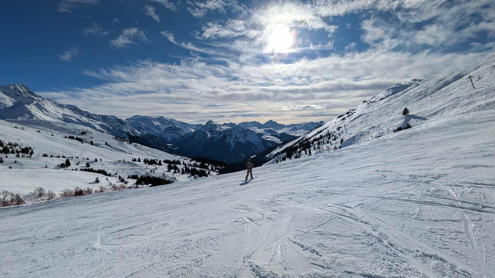

Mijn 1ste hobby dat ik heb uitgeprobeerd in 2026 was skiën🕺. Tijdens de lesvrije week ben ik met Siemen en Andreas V naar ‘La Plagne’ geweest in Frankrijk. Ik ben voor deze skireis 1 week in Duitsland gaan skiën toen ik 13/14 jaar was en ook 1 keer naar een indoorski geweest aka ik had nog ni veel ervaring. Siemen was 2 jaar geleden op skireis geweest en Andreas had zijn eigen skilatten en materiaal en ging wel meerdere keren op een jaar gaan skiën. Met de ervaren jongens ging ik met een bang hartje mee op de skiliften en volgde ze naar beneden.
De 1ste skidag was ni zo’n leuke dag. Het begon goed op de blauwe pistes, maar mijn skibotten🎿 zaten heel strak aan mijn kuiten waardoor ik heel veel moeite moest doen om mijn kuiten te gebruiken en da ook veel pijn deed op het einde van de dag. Daarnaast had ik nog een slechte skibril🤓. Ik was ook heel dicht bij een afgrond gevallen waardoor ik schrik had opgelopen voor de rest van de dag. Ik ben rond 14u al naar ons hotel geskied🎿 want ik was het beu… Daarna was het après-ski, maar mss lag het aan de organisatie, want da was ook gene vettn🤰. Maja wij hebben ook ni meer dan 1 pintje🍺 gedronken dus mss lag het aan ons. Daarna hebben we lekker gekookt en lekker vroeg in ons bedje🛌🏿 gegaan voor de volgende skidag🫡. Ik ben die dag mijn skiën gaan inwisselen en heb een reserveskibril van Andreas geleend en die dag vond ik het skiën veeel leuker🎉. Uiteindelijk heb ik echt nog kunnen genieten van de verschillende pistes. Ik heb alle kleurencodes geprobeerd van groen tot zwart en ook een fun piste met een kleine schans en ,met uitzondering van een paar enge rode, vond ik ze allemaal heel leuk!
De leukste pistes waten voor mij de hoge bovenaan de berg (glacier), die ene rechts waar ik echt supersnel ging en de zwarte dat eig een blauwe was met weinig sneeuw. Over het algemeen vond ik skiën echt heel leuk om te doen! Wel intensief en heel duur jammer genoeg. Dus het zal geen hobby worden jammergenoeg, want na die reis ben ik toch wel 1ktje lichter💸.